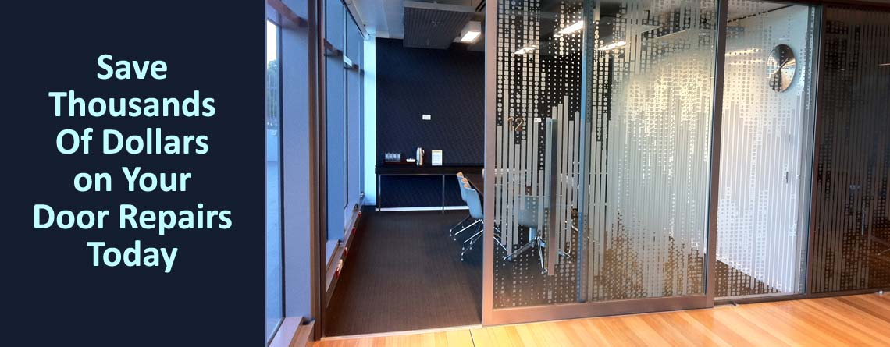

Is your Stegbar sliding door heavy, grinding or impossible to open? Adsafe Doors has been bringing tired Stegbar doors back to life across the North Shore since 1992 — don't replace it, save thousands and have it repaired.
Stegbar is one of Australia's best-known sliding door brands, and there are thousands of them in homes across the North Shore. The good news? Stegbar frames are solid and built to last — when the door gets heavy and noisy, it's almost always the rollers and track that have worn out, not the door itself.
We've been repairing Stegbar sliding doors across the North Shore since 1992. We come to you with the right heavy-duty rollers and track parts on the van, so most repairs are done in a single visit.
From worn rollers to trashed tracks, we restore Stegbar sliding doors to a smooth, silent, one-finger glide.
Worn Stegbar rollers swapped for heavy-duty 4-wheel units that spread the load and last for years.
Worn Stegbar aluminium tracks machined and capped with stainless steel for a smooth, durable run.
Realigning and repairing Stegbar locking mechanisms so your North Shore home stays secure.
Dropped or lopsided Stegbar doors corrected so they sit and slide perfectly in the frame.
Stegbar screen door rollers, corner stays and tracks repaired or replaced while we're there.
Large, heavy Stegbar stacker doors made effortless to slide again with one finger.

Replacing a Stegbar sliding door can run into the thousands. In most cases you simply don't need to — the frame and glass are fine, and only the running gear has worn out.
By upgrading to 4-wheel rollers and capping the track with stainless steel, we give your Stegbar door a new lease of life. Most North Shore customers tell us their repaired door slides better than it did the day it was installed.
Stegbar & other door brands we repair in the North Shore
Tell us about your Stegbar door and the problem. We'll estimate and book a time — often the same or next day in the North Shore.
We call before arriving and show up when we say we will, with Stegbar-suited parts on the van.
We replace rollers, repair the track and realign — usually completed in a single visit.
We test the one-finger glide, explain maintenance, vacuum up and leave it spotless.
See real Adsafe repairs — Stegbar doors that were stuck, grinding and impossible to move, now gliding silently.
Real reviews from happy customers who chose to repair, not replace.
North Shore homes and businesses rely on us for more than Stegbar doors. Explore our full range of door services below.
Rollers, tracks, locks and alignment fixed so any sliding door glides with one finger.
Learn more →Expert repair and adjustment of hydraulic, transom and floor spring closers.
Learn more →Commercial and domestic door closer service across the Sydney metro area.
Learn more →Supply and installation of the right door closer for your door.
Learn more →We also repair sliding doors in Chatswood and Ryde. Not sure what you need? Get a free quote.
The North Shore runs from North Sydney and Crows Nest up through Chatswood, Roseville, Killara and Gordon to Wahroonga — leafy, established suburbs full of period homes and apartments alike. Many have older timber and aluminium sliding doors, and decades of use leave them noisy, stiff and hard to open.
Our sliding door repairs on the North Shore range from heritage homes in the upper suburbs to apartments around St Leonards and Chatswood. Stegbar doors are a regular sight, and rather than replace them we restore the original door with new rollers, track work and a realignment — quieter, smoother and far cheaper than replacement.
We come to you right across the North Shore and the surrounding suburbs — Chatswood, North Sydney, Willoughby, Lane Cove and Gordon and beyond.
Call us today and we'll book your repair — most North Shore appointments within 24 hours.